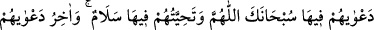

Kâmûs’da belirtildiği gibi “__WORD__”, bol nimet, rahat geçim ve refah demektir. Cennete
bu ismin verilmesi, ağaçlarının sıklığından zemininin gizli kalmasından dolayıdır.
Cinlere cin denmesi de gözlerden gizlenmelerindendir. Yine kendisiyle örtünüp
korunulduğu için kalkana “__WORD__” denilmiştir.
10. Onların oradaki duâları: “Allah’ım, sen her türlü eksiklikten uzaksın!”;
Birbirleriyle karşılaştıkça söyledikleri “selâm” dır. Duâlarının sonu da: “Âlemlerin
Rabb’ine hamd olsun!” sözleridir.
“Onların oradaki duaları:” yâni o cennetlerdeki duaları: “Allah’ım, sen her türlü
eksiklikten uzaksın!” Yani Ey Allah’ım! Seni tam mânâsıyla yüceltir, vaadinden
dönmekten ve yalan söz söylemekten tenzih ederiz. Bize vaad ettiğini olduğu gibi
bulduk. “birbirlerine sağlık dilekleri:” “Tahiyye”, yüksek hal ile şereflendirmektir.
Aslı, “Allah seni güzel bir hayat ile yaşatsın.” duâsıdır. Yani cennette birbirlerine iyi
hayat dilekleri “Selâm”dır. Yani her türlü kötülükten selamette olma temennisidir.
Ya da meleklerin onlara selâmı bu şekildedir. Nitekim Allah Teâlâ şöyle buyurur:
“Melekler her kapıdan yanlarına girip: “Size selam olsun” derler.” (er-Ra’d,
13/23-24). Yahut da Allah’ın onlara selamı böyledir. Nitekim Allah Teâlâ şöyle
buyurmuştur: “Merhametli olan Rab katından onlara selam vardır.” (Yâsîn, 36/58)
Dostun selâmını işitmek saâdet ve selâmettir
Yârin visâline ulaşmak en büyük ikrâm ve ihsandır
“Dualarının sonu da: “Âlemlerin Rabb’ine hamd olsun.” sözleridir.” Yani onların
bu sözü, Allah Teâlâ’yı celal sıfatlarıyla vasfetmelerinin peşinden ikram sıfatlarıyla
övmek için söylemeleridir. Yani onların duaları zikredilenlerle sınırlıdır. Çünkü onların
bekledikleri bir arzuları kalmamıştır ki dua edip onu istesinler.
Rivâyet edilmiştir ki cennetlikler bir şey arzu ettikleri zaman: “Ey Allah’ım seni
tenzih ederim” derler. Hemen peşinden hizmetçiler onlara yiyecek, içecek ve canlarının
çektiği her şeyi getirirler. Doyduklarında da onlar: “Âlemlerin Rabb’ına hamd olsun.”
derler.
Bilesin ki cennette ne mükellefiyet ne de ibadet vardır. Cennetliklerin ibadetleri
sadece Allah’ı tesbih ve O’na hamd etmektir. Aslında bu da bir ibadet değildir. Sadece
bu onlara ilham olunur ve onlar da bunu külfetsiz olarak lezzet almak için söylerler. Her
zaman Cenâb-ı Hakk’ın tesbih ve tahmîdinin lezzeti onlara cennetin bütün lezzetlerinden